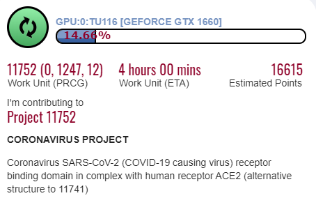
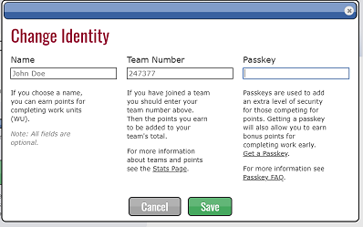

GoC Folding@Home
About Team Equipe GOC
A ragtag bunch of Public Servants in the Government of Canada lending their personal computers to Folding@Home; helping find a COVID-19 vaccine by modeling protein molecules.

Anyone with a computer can join the fight. For a simple tutorial go to Start Folding or checkout the Getting Started section below.

What is Folding?
"Folding@home (FAH or F@h) is a distributed computing project for simulating protein dynamics, including the process of protein folding and the movements of proteins implicated in a variety of diseases. It brings together citizen scientists who volunteer to run simulations of protein dynamics on their personal computers. Insights from this data are helping scientists to better understand biology, and providing new opportunities for developing therapeutics."
How does folding Help Tackle COVID-19?
"Downloading Folding@home and helping us run simulations is the primary way to contribute. These calculations are enormous and every little bit helps! Each simulation you run is like buying a lottery ticket. The more tickets we buy, the better our chances of hitting the jackpot."
Learn more about Folding for COVID-19
Getting Started Quickly
For those new to community cumputing projects or for those who just want to get up and going quickly we have broken down the steps to get started. If you runn into issues feel free to Contact Us
- Learn about "protein folding" for COVID-19
- Start by downloading the folding software
- Learn how to install and configure
- Then join the Team Equipe GOC #247377 team
- Finaly follow your progress and manage your local folding client
Tips for Managing Resources Between Working and Folding
- Experiment with the POWER and WHEN settings the fit your situation best.
- For the least hastle and best performance set the client to "Full Power" and "Only when Idle"
- Leave you computer running even when you are not using it but turn the monitors off. This will decrease energy consumption.
- Turn off any screen savers you might have, this frees up more compute power for Folding.
- If you are going to be leaving your computer for a long time set the client to "Full Power" and "while I am working"
- If you are starting your workday and worried about competing resources you can choose "Stop Folding", but consider the option to "Finish up folding, then stop". This works well if you have 30 min left of folding to finsih the Work Unit.
- In the client note the "My computer has X days to complete this work unit". If you shutdown or stop folding, X is the length of time you have to complete the work unit. If you miss this cut off, you might not get the points and the job will be passed to someone else.
Join the Team
One you are up and running, be sure to join the Team Equipe GOC by configuring your Folding@Home client with our Team ID # 247377

Team Stats
Check out how the team is doing compared to other folding teams. You can also track your contributions in the team leaderboard.
Community Support
If you get stuck on the above instructions or just want to engage with the Team Equipe GOC team consider joining GCcollab and join the #covid-folding channel in GCmessage.Here is how.
- Go to http://gccollab.ca
- Register On GCcollab by creating an account with your Canadian Government issued e-mail
- Login to [GCmessage]( with your GCcollab account
- join the #covid-folding Channel
- OPTIONAL: download Rocket Chat desktop client and [connect it to GCmessage]